Reservoir e.V.

Der Verein Reservoir e.V. wurde Ende 2019 nach dem ersten Festival Reservoir gegründet, das am 20. Juli 2019 an der Linachtalsperre stattgefunden hat.
Zweck des Vereins ist die Förderung des Experimentierens mit neuen Ausdrucksformen sowie mit neuen Techniken und Technologien in Musik und Medienkunst unter Einbeziehung eines möglichst vielfältigen Publikums. Verwirklicht wird der Vereinszweck durch die Durchführung des Festivals Reservoir sowie anderer Aktionen zur Vermittlung und Produktion experimenteller Musik und Medienkunst.
Der Vereinssitz ist in Furtwangen im Schwarzwald.